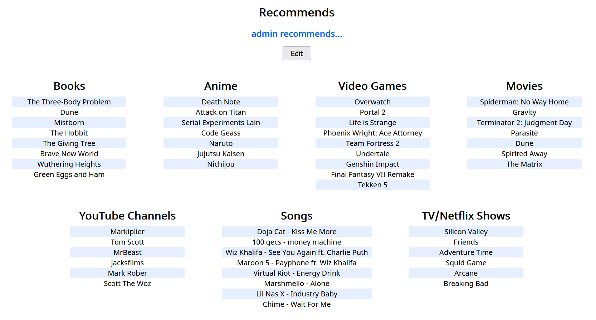
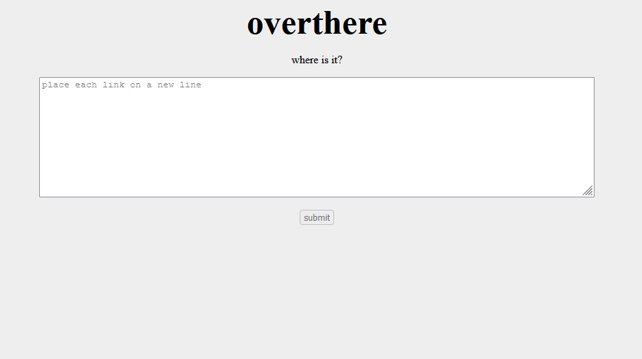
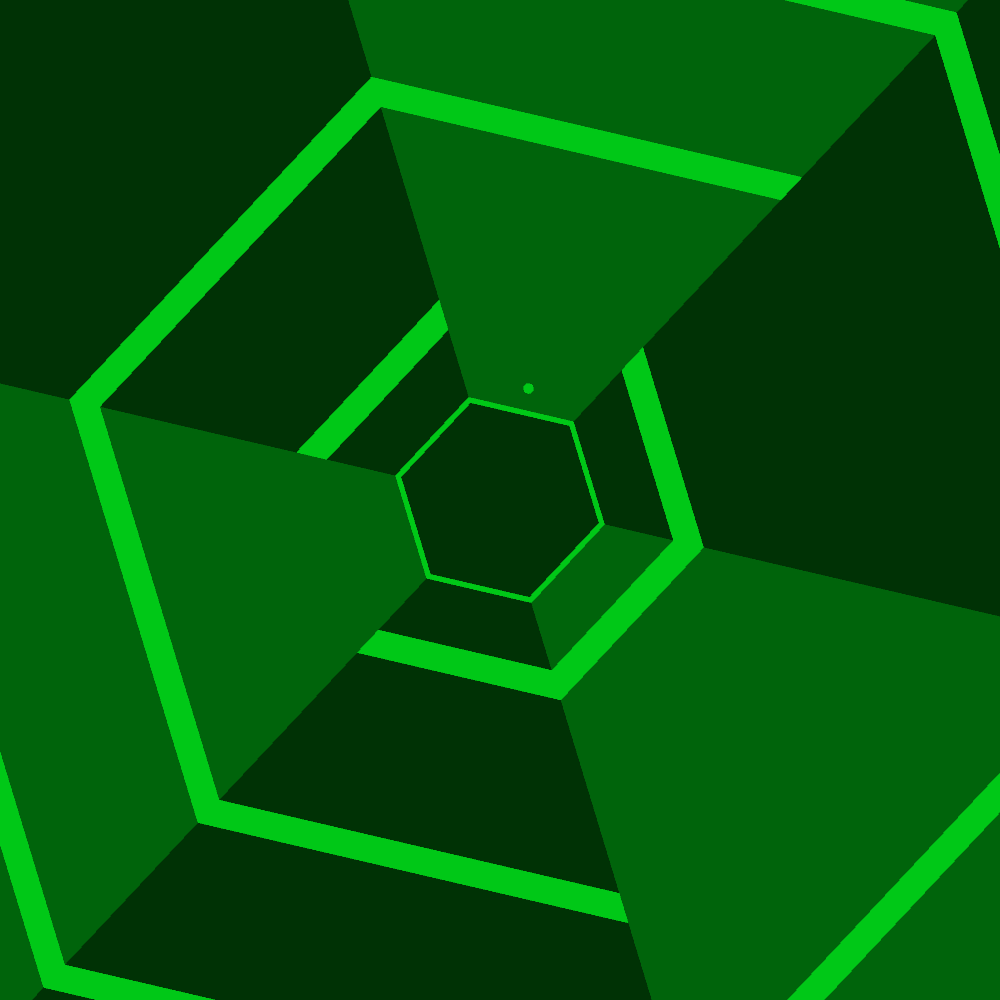
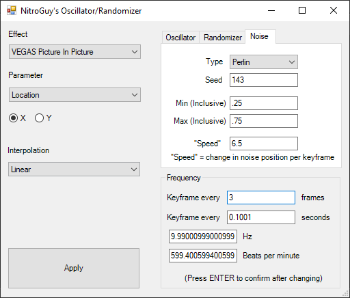
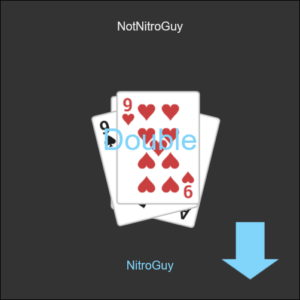
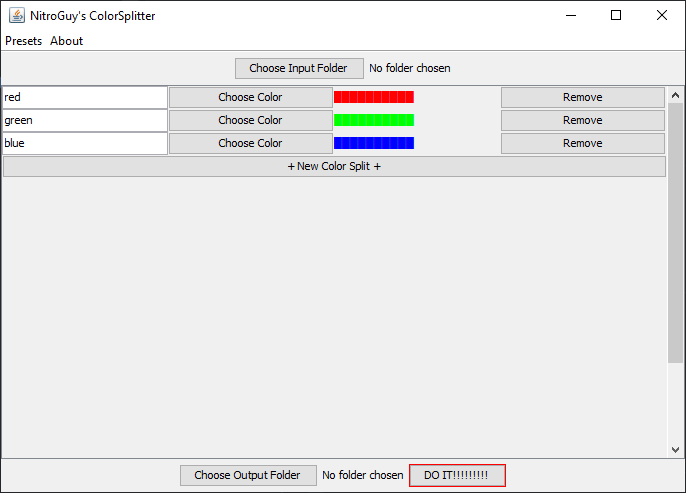
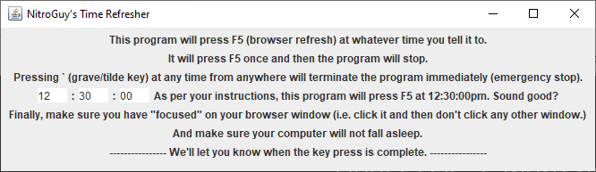
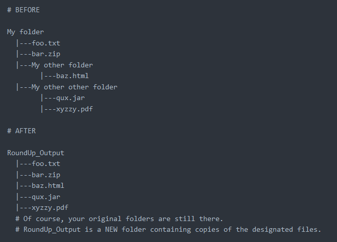
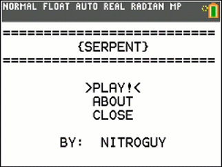

A List of Some of My Projects
Hello! This is a list of some of my programming projects in roughly chronological order. This includes software, plugins, webpages, microcontroller projects, et cetera. Let me know if you have questions about anything and hope you enjoy!
recommends
25 December 2021 - 4 January 2022
Python, HTML, CSS, JavaScript - Flask, Jinja, SQLite, PyNaCl
A social-media-I-guess-kinda-not-really site where users can recommend books, movies, etc. to their friends. prydt and I made this in a couple days using Flask, Jinja, SQLite, PyNaCl, and the usual HTML/CSS/JavaScript shebang. I mainly worked on the frontend and pry worked on the login and database stuff. Overall, I'm pretty happy with how this turned out. It's quite minimal, but I feel like it has a lot of potential if we were ever to come back and polish/expand/deploy it.
overthere
19 December 2021 - 24 December 2021
Python, HTML, CSS, JavaScript - Flask, SQLite
I sat thinking hard and long about my life and my future. Finally, I came to a realization: "Hm, I should probably make something with SQL." And overthere was born.
overthere is bit.ly/tinyurl clone-ish that lets you post multiple links on one page. It also has fun, memorable URLs like "exquisite-cow"—a feature inspired by Magic-Wormhole.
Supremely_Hexagonal
28 October 2021 - 1 November 2021
Java - Processing
Supremely_Hexagonal is a simplistic remake of Super Hexagon by Terry Cavanagh in Processing. I actually make a LOT of stuff for fun in Processing but I don't post it on GitHub because most of it isn't exactly useful software lol.
This one actually has a story. I was sitting in class with my roommate and he was playing Super Hexagon on his phone. I watched him play for a while and then said, "I bet I could make that". So that night I did. We both had just taken a math test and while any normal person would have been relaxing, I was coding for fun like a weirdo. I finished the MVP that night and was completely done two days later!
I find it kind of ridiculous that I was able to make this in such a short amount of time. Though, this same phenomenon crops up a lot when writing music for me (and many others I'm sure). You could spend months and years on something and never quite get it the way you want it, but then one day you get inspired, start something new, and completely finish it in a day or two. That was not supposed to rhyme.
Peekaboo
1 October 2021 - 21 October 2021
Java
Another short and sweet one. Peekaboo lets you take screenshots from the terminal using Java's Robot class. That is all.
VEGAS Scripts/Plugins
26 July - 16 August 2021
C# - Windows Forms, VEGAS Pro Script API
When I first started using MAGIX VEGAS Pro 18, I found it generally very advanced and feature rich, but at the same time lacking in certain effects that are standard in most editing software I've used. When I found out how easy it was to make plugins for VEGAS, I kind of got a little obsessed and made a whole bunch of 'em! This actually was my first time ever making plugins and while there is hardly any information or tutorials online on how to make VEGAS plugins, I must say the API and docs- er... doc is quite good. Mostly.
This was also my first time working with C# outside of Unity and I quite like it. It also helps that it was really easy to pick up since its syntax is exceptionally similar to Java except for the Capitalization Of Everything. Working with Windows Forms was also very fun. There's something I can't really explain about the look of those default Windows dialog boxes that's somewhat nostalgic and just generally cool to work with; I get that same feeling with Java's Swing using the default look-and-feel. I don't know what it is. Maybe I'm just weird like that. I definitely envision myself using C# for something else in the future.
I guess I should talk about the actual plugins, huh? Well there are a couple of really simple ones like one that selects everything after the playhead and one that adds a VEGAS Picture In Picture effect to everything (because yes, I wanted a script for that). The big and complex ones include a "screen shake" effect, a super janky "chromatic aberration" effect, and a plugin that can animate any parameter of a video effect based on an oscillator, random number generator, or noise.
nitroguy10.github.io
11 December 2016 - Ongoing
Python, HTML, Sass, JavaScript - Jinja, JSON
Hey, it's the website you're on right now! The way this site was created is actually pretty complicated and made for a good story, so I wrote a whole other article about it. Check it out!
How This Website Was Made, A Story
ERS-OL
24 June - 3 July 2021
Python, HTML, CSS, JavaScript - Flask, Socket.io
ERS-OL (Egyptian Rat Screw Online) is an online multiplayer web game version of my favorite card game, Egyptian Rat Screw. The game isn't actually being hosted anywhere right now so if you want to play it, you'd have to clone the repository and run the server yourself. It uses Python for the server and, unsurprisingly, JavaScript for the client.
Just like my website, this is another project I'm suuuuuper proud of. I've never come close to doing a project involving networking at this scale or even at all. It took me an unprecedented amount of time and effort to complete it and I really am very happy with the final product... if it weren't for the ping.
*sigh* yeah... in practice this game is rather unplayable over the internet because the ping gives the host a massive advantage. Actually, this game runs quite well if played over LAN, but if you're able to play this over LAN, THEN WHY NOT JUST PLAY THE ACTUAL CARD GAME AHAHHAHAHAH.
Despite all that, I'm really happy I was able to finish this project. At the very least, it reassured me that game development is not the career path for me :P
ColorSplitter
28 June - 29 June 2021
Java - Swing
ColorSplitter takes an input folder of images and isolates certain colors from that image (generating "whitemasks") and outputs them into a folder. I originally made it in Processing but then I realized I only used like 2 things from Processing so I remade it in pure Java. I'm not entirely sure what the applications for this are lol. I actually made this upon request from one of my friends. He needed a program that generated whitemasks for his game sprites or something so that program I did make.
DocLCD
2 June - 4 June 2021
Python, Arduino - PySerial, Pygame
DocLCD is a "word processor" of sorts for 20x4 character LCDs with I2C drivers. It's controlled by a Python program running on a Raspberry Pi which talks via serial to an Arduino program. The Arduino program then controls the character LCD through the LCD's I2C driver. The Python program accepts keyboard input and allows you type characters and traverse around the LCD screen.
TimeRefresher
2 June 2021
Java - Swing
I needed TimeRefresher for one very specific thing. "Press F5 at a certain time". Yep, that's it. I love just making programs to solve these tiny little inconveniences. Knowing how to code really is like having superpowers.
RoundUp
7 May - 23 May 2021
Python
RoundUp is a single Python script that copies all files from a directory tree into a single folder. The README does a better job of explaining this so check it out if you're interested. Just like with TimeRefresher, I created this to automate a process I often have had to do manually. Specifically, to deal with photos that were automatically organized into folders by programs against my will.
tuscon
21 March - 9 April 2021
Python - BeautifulSoup
tuscon (yes, you read that right, that really is the name) is a super-simple web-templating library. All it is is HTML files with parameters, if statements, and for loops. I talk about my (unfortunate) reason for creating tuscon in that article about my website.
Pi555
ca. 2016 - 22 December 2019
Java - MIDICSV, Pi4J, Raspberry Pi GPIO
Pi555 was my first Computer Engineering, microcontroller-type project thing and boy oh boy did I bite off more than I could chew with this one. Though intimidating, I was able to finish this project and I might consider it my magnum opus. It is VERY cool, trust me.
...okay so I can't exactly show it to you but I guess I can describe what it is. So, a 555 timer is a chip that can be used to generate a square wave at a given frequency. With the right configuration, you can get it to play a tone on a speaker. My goal for this project was to play music using the tone generated by the 555 timer. The way you'd change the pitch of the tone is by changing the resistance between two of the chip's pins and I used a digital potentiometer for this.
As if I hadn't already had my work cut out for me, knowing hardly anything about Computer Engineering stuff, I wanted to be able to use MIDI files as the source for the music. What all of this ultimately resulted in was a Java program (probably should've used Python though) that read through a MIDI file and translated it into something that the "music player" Java program could use. This "music player" program (which ran on a Raspberry PI) played the correct notes at the correct times on the 555 timer by sending bytes to the digital potentiometer through its GPIO pins.
And... yeah. It worked. And it was awesome. I really wish I had something else to show you here. Sorry!
ClickType
6 May - 8 May 2019
HTML, CSS, JavaScript
Let's go straight from awesome and complex back to simple and ridiculous. Ever wanted to hear an annoying click sound every time you press a key? No? Too bad; ClickType. Now you can experience the cacophony of blue mechanical keyboard switches at no cost to you!
ResistorTool
5 August 2018
HTML, CSS, JavaScript - Bootstrap
Tired of memorizing vulgar acronyms to help you read the resistance values of resistors from the colored stripes? Or maybe you're just too lazy to learn them at all? Just input the colors into this tool and be enlightened.
RoboPlato 2000
ca. January 2018
That time I trained a character-based recurrent neural network on Plato's works.
Featuring such great wisdom as: "See none also those things of this class of great antiquity does not charm from the eye of our manner in which young or motion is illusion to balanced; whereas all this to equals in a long sufficient indissolution of their rules and proportions"
The Essential Wisdom of RoboPlato 2000
Jumpy
17 April 2017 - 4 December 2018
HTML, CSS, JavaScript

Memories, memories. Jumpy is a game I "made" by half following a tutorial and half doing my own thing. I was a rather unexperienced but quickly-learning programmer at the time and I remember being so happy when I made a nested for-loop that read through the 2D arrays that stored the levels. I showed this game to a bunch of people at school and it was so awesome to see them all play it and subsequently rage at how hard it was. To this day I still have the list on my phone that contains the names of the people I knew who beat Jumpy. All 13 of them.
The game itself is a pretty basic HTML5 canvas web game. It's a typical 2D platformer with positively asinine level design. The difficulty curve is outta wack. What's funny is that whenever I found a bug with the physics, instead of fixing it, I designed levels that used that bug. The epitome of "it's not a bug, it's a feature". There's also a level creator, which is pretty awesome.
P.S. If you're one of my friends from school and you came to my website just to look for Jumpy, you found it! Congrats and welcome home! :)
Dodge3
18 March - 15 June 2017
HTML, CSS, JavaScript

Another HTML5 canvas web game. This one's remarkably less ...remarkable than Jumpy. Just dodge the red rectangles. Not much else to say besides that this was my first big foray into JavaScript. Oh, and I made music for this game that doesn't play anymore because of autoplay restrictions and poor implementation lol.
And by the way, can we talk about what a horrible name "Dodge3" is? It sounds like it's the third entry in the "Dodge" series but nope. It's called that because there are 3 positions you can move to. How fun.
CalcGames
5 January - 11 July 2017
TI-Basic

TI-Basic programming is a confusing mess that I absolutely love. There's a huge active community dedicated to programming for TI-84 calculators, and I decided to take part by making some of my own games. If you too want to waste your time programming for these calculators, it's super fun and I highly recommend learning if you're interested. Here's an awesome wiki with tons of good information.